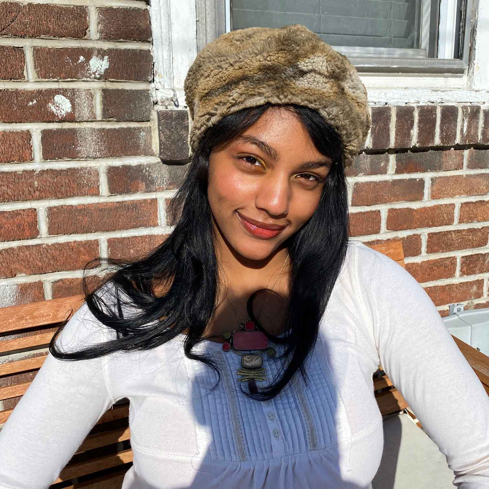

Hello, my name is Jayla! I am a second year student studying User Experience and Interaction Design. My curiosity in this field stems from the crossover of creative design thinking and technology. All together, I hope to create inclusive digital designs to promote accessible media for all.
Crochet is my preferred physical medium in which I create personalized apparel and accessories. I am in the works of creating a business to produce customizable crochet pieces. I am very passionate about the complexity, creativity, and precision that crocheting entails.
Graphic design peaks my interest because it promotes creative expression. I am currently a graphic designer for Drexel’s Campus Activities Board. My mission consists of delivering curated designs to present information on upcoming communal activities.
My experience with hobbies like graphic design and crochet fortify my abilities to problem solve and multi-task when researching user pain points and prototype innovative designs.